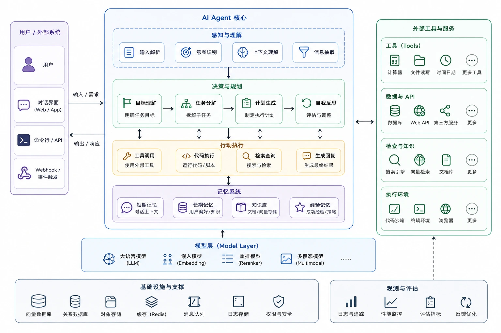

Arquitectura de Agent
Agent (agente) se refiere a un sistema de IA que puede percibir el entorno de forma autónoma, razonar y tomar acciones para alcanzar objetivos.
Este artículo va desde el bucle más simple hasta la colaboración de múltiples Agent; en un solo artículo entenderás los principios, diagramas y escenarios aplicables de las seis arquitecturas principales, para ayudarte a tomar la decisión técnica adecuada en proyectos reales.

Qué es la arquitectura de Agent
En el desarrollo de aplicaciones de IA,Agent (agente)se refiere a un sistema de IA capaz de percibir el entorno, tomar decisiones de forma autónoma y ejecutar acciones.
A diferencia de la invocación tradicional de modelos grandes de tipo "pregunta-respuesta", Agent puede ejecutar operaciones de varios pasos de forma continua, llamar herramientas e incluso coordinar a otros Agent para completar tareas complejas.
Arquitectura de Agentse refiere a la forma en que se organizan los distintos componentes del sistema Agent, lo que determina los límites de capacidad, la fiabilidad, la flexibilidad y los escenarios aplicables del Agent.
La forma de trabajo del Agent es esencialmente unbucle (Loop)—percibir el estado actual, razonar el siguiente paso, ejecutar la acción, volver a percibir... hasta que la tarea se complete.
La diferencia entre las distintas arquitecturas radica en cómo organizar y ampliar este bucle básico.
Este artículo asume que ya conoces los conceptos básicos del modelo de lenguaje grande (LLM) y la idea básica de "llamada de herramientas" (Function Calling). Si aún no lo conoces, puedes familiarizarte primero con estos dos conceptos fundamentales.
Arquitectura 1: Bucle de un solo Agent (Single Agent Loop)
La mejor opción para empezar Implementación sencilla
Es la arquitectura más básica e intuitiva: un solo Agent completa todas las tareas de principio a fin de forma independiente.
El bucle de un solo Agent refleja directamente elpatrón ReAct(Reasoning + Acting): cada paso es "pensar primero, actuar después". El LLM actúa como el cerebro y la llamada de herramientas son sus manos.
Principio de funcionamiento
Percepción:Lee el estado actual (contenido de archivos, variables de entorno, resultados de pasos anteriores) y lo integra como contexto actual.
Razonamiento:El LLM decide la siguiente acción según el contexto: qué herramienta llamar, qué parámetros pasar, o determinar si la tarea está completa.
Acción:Ejecuta la llamada a la herramienta, por ejemplo leer/escribir archivos o buscar en la web. El resultado de la herramienta se añade al contexto y entra en la siguiente ronda del bucle.
El resultado de cada llamada a una herramienta se escribe de vuelta en el contexto (Context Window). Por tanto, a medida que avanza la tarea, el contexto crece continuamente hasta alcanzar el límite de la ventana de contexto del LLM; este es el principal cuello de botella del bucle de un solo Agent.
Ejemplo
class SimpleAgent:
"""单 Agent 循环的基本结构"""
def __init__(self, model, tools, max_turns=10):
self.model = model # 大语言模型
self.tools = tools # 可用工具列表
self.max_turns = max_turns # 最大循环轮次，防止无限循环
def run(self, task: str) -> str:
"""执行任务的主循环"""
context = f"用户任务：{task}"
for turn in range(self.max_turns):
# 第一步：思考 —— 让模型决定下一步
response = self.model.think(context)
# 如果模型认为任务完成，返回最终答案
if response.is_final():
return response.content
# 第二步：行动 —— 调用模型选择的工具
tool_name = response.tool_name
tool_args = response.tool_args
tool_result = self.tools[tool_name](**tool_args)
# 第三步：将工具结果反馈给模型，进入下一轮
context += f"\n工具 {tool_name} 返回：{tool_result}"
return "达到最大轮次，任务未完成"
# 使用示例
agent = SimpleAgent(model=llm, tools={
"read_file": read_file,
"search_code": search_code,
"run_test": run_test
})
result = agent.run("修复 runoob 项目中 user.py 的类型错误")
Ventajas
- La implementación más sencilla, fácil de depurar
- Adecuado para escenarios con límites de tarea claros
- Compatibilidad con casi todos los frameworks de Agent
Desventajas
- La ventana de contexto se llena fácilmente
- Es fácil "desviarse" en tareas complejas
- No puede procesar múltiples subtareas en paralelo
Escenario óptimo de aplicación:Arreglar un bug, escribir una función, responder una pregunta concreta. Tareas claras, complejidad moderada, sin necesidad de paralelismo ni colaboración de múltiples roles.
Si tu tarea requiere más de 15 rondas de llamadas a herramientas, el bucle de un solo Agent quizá no sea la mejor opción. Considera usar arquitecturas de colaboración multi-Agent o de planificación-ejecución para dividir la complejidad.
Arquitectura 2: Planificación + Ejecución (Plan & Execute)
Intuitivo Revisable
Separa "pensar claramente qué hacer" y "hacerlo realmente" en dos fases independientes, mejorando la previsibilidad y auditabilidad de las tareas.
La arquitectura de planificación + ejecución divide el trabajo del Agent en dos fases claras: primeroplanificación (Plan), luegoejecución (Execute)。
En la fase de planificación, el modelo no ejecuta ninguna operación, solo genera una lista detallada de pasos de ejecución. En la fase de ejecución, el sistema completa cada paso secuencialmente. Esta separación permite al usuario revisar el plan antes de la ejecución, como en el Plan Mode de Claude Code.
Dos variantes
| Variante | Comportamiento | Escenario típico |
|---|---|---|
| Planificación estática | El plan se genera una sola vez, se ejecuta linealmente en orden, sin ajustes en el camino. | Tareas con flujo fijo y pasos claros, como scripts de migración de datos. |
| Planificación dinámica | Reevaluar después de cada paso y ajustar el plan posterior según los resultados. | Tareas con resultados inciertos, como depuración o análisis exploratorio de datos. |
La planificación dinámica es más robusta, pero su implementación es más compleja y replanificar en cada paso consume tokens adicionales.
El Plan Mode de Claude Code es una manifestación de esta arquitectura: después de hacer clic en «Plan», la IA genera primero un plan detallado para que lo revises, y solo comienza a ejecutar tras tu confirmación. Esto aumenta enormemente la sensación de control del usuario.
Ejemplo
class PlanExecuteAgent:
"""Agent que primero planifica y luego ejecuta"""
def plan(self, task: str) -> list:
"""Fase 1: generar el plan de ejecución"""
plan = self.model.generate(f"""
Desglosa la siguiente tarea en una lista de pasos ejecutables:
Tarea: {task}
Devuelve una lista de pasos en formato JSON, cada paso incluye:
- step_id: número de paso
- description: descripción del paso
- tool: nombre de la herramienta que se debe llamar
""")
return plan
def execute(self, plan: list, dynamic: bool = False) -> str:
"""Fase 2: ejecutar el plan paso a paso"""
results = []
remaining_plan = plan.copy()
while remaining_plan:
step = remaining_plan.pop(0)
output = self.tools[step["tool"]](step["description"])
results.append({"step": step["step_id"], "output": output})
if dynamic and remaining_plan:
# Planificación dinámica: reevaluar los pasos posteriores según los resultados actuales
remaining_plan = self.replan(remaining_plan, results)
return self.summarize(results)
# Ejemplo de uso
agent = PlanExecuteAgent()
plan = agent.plan("Añadir autenticación de usuarios al proyecto runoob")
# El humano puede revisar primero el plan y ejecutarlo solo después de confirmar que es razonable
result = agent.execute(plan, dynamic=True)
Ventajas
- El plan puede revisarse manualmente antes de la ejecución
- Separación clara de las responsabilidades de razonamiento y ejecución
- Adecuado para tareas largas
Desventajas
- El plan inicial puede no ser lo bastante preciso
- Las dos fases añaden latencia
- La versión estática difícilmente maneja situaciones inesperadas
El costo de Plan & Execute es que añade rondas de razonamiento, lo que resulta un desperdicio para tareas simples. Si una tarea puede completarse en 3 pasos, es más eficiente usar directamente un bucle de un solo Agent.
Arquitectura 3: Colaboración de múltiples Agent (Multi-Agent)
Recomendado para producción Tareas complejas
Un Orchestrator (coordinador) se encarga de descomponer y programar las tareas; varios Subagent cumplen cada uno su función y completan las subtareas en paralelo o en serie; los resultados vuelven al Orchestrator para su síntesis.
Cuando un solo Agent se enfrenta a una ventana de contexto insuficiente o a una tarea demasiado compleja, la arquitectura multiagente ofrece una solución elegante:hacer que múltiples Subagent especializados trabajen en paraleloy un Orchestrator (coordinador) supervisa el conjunto.
El contexto independiente es la ventaja central
Cada Subagent poseeuna ventana de contexto independienteQue el Agent de revisión de código lea en profundidad auth.py no afecta el juicio del Agent de análisis de rendimiento; la gran cantidad de salidas intermedias generadas por el Agent de detección de seguridad no ocupa el espacio de otros Agent.
Los Subagent son efímeros y aislados: se destruyen al completar una tarea. Los Agent Teams, en cambio, son múltiples instancias independientes de Agent que colaboran durante largo tiempo y se envían mensajes entre sí, más parecidos a un equipo real.
Ejemplo
class Orchestrator:
"""Orquestador: responsable de la descomposición, distribución y resumen de resultados de las tareas"""
def __init__(self):
self.subagents = {
"code_review": Subagent(
name="Revisión de código",
tools=["read_file", "static_analysis"],
system_prompt="Eres un experto en revisión de código..."
),
"security": Subagent(
name="Detección de seguridad",
tools=["scan_vulnerability", "check_deps"],
system_prompt="Eres un experto en detección de seguridad..."
),
"performance": Subagent(
name="Análisis de rendimiento",
tools=["profile_code", "analyze_complexity"],
system_prompt="Eres un experto en análisis de rendimiento..."
)
}
def handle_task(self, task: str) -> dict:
# Primer paso: analizar la tarea y decidir qué Subagent se necesitan
needed = self.plan(task)
# Segundo paso: distribución en paralelo (cada Subagent trabaja simultáneamente con contexto independiente)
results = {}
for agent_name in needed:
sub_task = self.decompose(task, agent_name)
results[agent_name] = self.subagents[agent_name].run(sub_task)
# Tercer paso: resumir los resultados de cada Subagent y generar una salida sintetizada
return self.synthesize(task, results)
# Ejemplo de uso: una ejecución, análisis paralelo en tres dimensiones
orch = Orchestrator()
report = orch.handle_task("Revisar el PR #42 del proyecto runoob")
Ventajas
- Admite paralelismo de forma natural y es rápido
- Los Subagent son independientes entre sí y sus contextos no interfieren
- Se puede especializar el rol de cada Subagent
Desventajas
- La lógica de coordinación es compleja y difícil de depurar
- El costo de tokens es mayor con varios Agent en paralelo
- El propio Orchestrator puede convertirse en un cuello de botella
El costo principal de la colaboración Multi-Agent es la sobrecarga de orquestación. Si las subtareas son muy simples (cada una solo requiere 1-2 pasos), la sobrecarga de orquestación puede superar el costo del trabajo real; en ese caso, un solo Agent es más adecuado.
Arquitectura 4: Reflexión y autocorrección (Reflection)
Salida de alta calidad Fácil de integrar
Añade una evaluación de calidad en la etapa de salida del Agent; si no es satisfactoria, se regenera o corrige, formando un bucle interno de iteración.
La arquitectura de reflexión añade un «paso de control de calidad» al Agent: después de cada salida generada, unEvaluador (Critic)evalúa la calidad; si no cumple el estándar, solicita una corrección hasta que la salida satisfaga el criterio.
Es como cuando un desarrollador ejecuta sus propias pruebas tras escribir el código: una autoverificación antes de entregar.
Dos formas de implementación
| Forma | Mecanismo | Ventajas | Desventajas |
|---|---|---|---|
| Autorreflexión | El mismo modelo primero ejecuta y luego evalúa su propia salida | Implementación simple, sin costo adicional de modelos | El modelo puede «hacer la vista gorda» a sus propios errores |
| Modelo Critic | Usar un modelo evaluador independiente para evaluar la salida del modelo ejecutor | Más objetivo, puede descubrir los puntos ciegos del modelo ejecutor | Aumenta el costo de llamadas al modelo y la latencia |
«Escribir pruebas unitarias → ejecutar las pruebas → observar los fallos → corregir el código → volver a ejecutar»: esta es la aplicación clásica de la arquitectura de reflexión. El resultado de las pruebas es en sí mismo la señal de retroalimentación del Critic.
Ejemplo
class ReflectiveAgent:
"""Agent con capacidad de autorreflexión"""
def __init__(self, model, tools, max_reflections=3):
self.model = model
self.tools = tools
self.max_reflections = max_reflections # Número máximo de correcciones para evitar bucles infinitos
def run(self, task: str) -> str:
# Primer paso: ejecutar normalmente y producir la salida inicial
output = self.model.generate(task)
for i in range(self.max_reflections):
# Segundo paso: reflexión — evaluar la calidad de la salida
critique = self.model.generate(f"""
Evalúa estrictamente la siguiente salida:
Tarea original: {task}
Salida actual: {output}
Comprueba: ¿errores factuales? ¿lagunas lógicas? ¿información omitida? ¿problemas de formato?
Si la salida es perfecta, responde "PASS".
""")
if "PASS" in critique:
break # La salida pasa la revisión
# Tercer paso: corregir — mejorar según las críticas
output = self.model.generate(f"""
Tarea original: {task}
Salida anterior: {output}
Retroalimentación del problema: {critique}
Corrige la salida según la retroalimentación.
""")
return output
# Ejemplo de uso
agent = ReflectiveAgent(model=llm, tools={})
code = agent.run("Escribe una función en Python que implemente el cifrado AES de la cadena RUNOOB")
# Después de generar el código, el Agent revisa por sí mismo la implementación del cifrado y el manejo de claves,
# y corrige automáticamente los fallos detectados para garantizar que la salida sea segura y confiable
Ventajas
- Mejora notablemente la calidad de la salida
- Se pueden establecer estándares de calidad claros
- Adecuado para tareas con criterios de evaluación objetivos
Desventajas
- Las iteraciones múltiples aumentan la latencia y el costo
- Es necesario establecer un número máximo de iteraciones para evitar bucles infinitos
- Efecto limitado cuando los criterios de evaluación son difíciles de formalizar
El bucle de reflexión añade una llamada adicional al LLM en cada iteración, lo que aumenta notablemente la latencia. Además, es necesario establecer un límite máximo de iteraciones de reflexión; de lo contrario, el modelo puede caer en un bucle infinito de "nunca estar satisfecho".
Arquitectura 5: RAG + Agent (agente aumentado por recuperación)
Tareas intensivas en conocimiento Bases de conocimiento a gran escala
Añadir capacidad de búsqueda vectorial al conjunto de herramientas del Agente, permitiéndole consultar dinámicamente bases de conocimiento externas durante el razonamiento, superando las limitaciones de la ventana de contexto.
RAG (Retrieval-Augmented Generation, generación aumentada por recuperación) es originalmente una técnica que permite al LLM consultar bases de conocimiento externas. Cuando se combina con un Agente, se vuelve más potente: el Agente puededecidir activamente cuándo recuperar y qué recuperar, en lugar de realizar pasivamente una única recuperación cada vez.
Diferencias clave frente al RAG normal
El RAG normal es "pasivo y de una sola vez": cuando el usuario pregunta, se realiza una recuperación fija y el resultado se inserta en el prompt.
RAG + Agente es diferente: el Agente determina de forma autónoma en qué etapa del razonamiento necesita conocimiento adicional y qué recuperar, y puede consultar la base de conocimiento varias veces hasta obtener suficiente información para completar la tarea.
Cuando un Agente de preguntas y respuestas sobre un repositorio de código recibe la pregunta "¿por qué se usa aquí el patrón singleton?", recupera activamente la documentación del proyecto, los registros de decisiones de diseño y los archivos de código relacionados, en lugar de limitarse a adivinar basándose en la memoria de entrenamiento del LLM.
Ejemplo
class RAGAgent:
"""Agente con capacidad de recuperación dinámica"""
def __init__(self, model, vector_db, max_retrievals=5):
self.model = model
self.vector_db = vector_db # Base de datos vectorial
self.max_retrievals = max_retrievals
def should_retrieve(self, context: str, question: str) -> bool:
"""El Agente decide por sí mismo si necesita recuperar más información"""
decision = self.model.generate(f"""
Información actual conocida: {context}
Pregunta actual: {question}
¿La información disponible es suficiente para responder la pregunta? Responde YES o NO.
""")
return "NO" in decision
def run(self, task: str) -> str:
context = ""
retrieval_count = 0
while retrieval_count < self.max_retrievals:
# El Agente decide de forma autónoma si necesita recuperar
if not self.should_retrieve(context, task):
break
# El Agente decide de forma autónoma qué recuperar
search_query = self.model.generate(f"""
Tarea: {task}
Información existente: {context}
Para completar la tarea, ¿qué información debería recuperarse a continuación?
""")
# Ejecutar la recuperación y añadir el resultado al contexto
docs = self.vector_db.search(search_query)
context += "\n".join(docs)
retrieval_count += 1
# Sintetizar toda la información para generar la respuesta final
return self.model.generate(f"Tarea: {task}\nMaterial de referencia: {context}")
# Ejemplo de uso
agent = RAGAgent(model=llm, vector_db=runoob_docs_db)
answer = agent.run("¿Cómo configurar el grupo de conexiones de base de datos en el framework RUNOOB?")
# El Agente primero recupera "configuración del grupo de conexiones" y encuentra que se menciona "número máximo de conexiones"
# Si no lo entiende, vuelve a recuperar "mejores prácticas para el número máximo de conexiones"
# Finalmente, sintetiza los resultados de múltiples rondas de recuperación para dar una respuesta completa
Ventajas
- Supera las limitaciones de la ventana de contexto
- La salida está documentada, reduce las alucinaciones
- La base de conocimiento se puede actualizar de forma independiente
Desventajas
- La calidad de la recuperación afecta el resultado general
- Costo de mantenimiento de la base de datos vectorial
- La latencia de recuperación aumenta el tiempo de respuesta
Arquitectura 6: Orquestación de flujo de trabajo (Workflow / DAG)
Opción preferida para producción Alta fiabilidad
Consiste en fijar el comportamiento del Agente en un grafo acíclico dirigido (DAG). Cada nodo es una llamada al LLM o a una herramienta; las aristas representan dependencias de datos, y la ejecución es impulsada por el framework.
Esta es la arquitectura de Agente más cercana a la ingeniería de software tradicional. La mayor diferencia con las arquitecturas anteriores es que:El espacio de decisión autónoma del Agente se limita al interior de un único nodo, y el flujo entre nodos está predefinido e immutable.
Agent puro vs flujo de trabajo DAG
| Característica | Agente puro | Flujo de trabajo DAG |
|---|---|---|
| Control de flujo | El modelo decide autónomamente el siguiente paso | Lo decide el grafo DAG predefinido |
| Predictibilidad | Baja, la ruta de ejecución puede variar cada vez | Alta, la ruta de ejecución es determinista |
| Capacidad de depuración | Difícil, depende del rastreo de registros | Fácil, las entradas y salidas de cada nodo son claras |
| Tolerancia a fallos | Depende de que el modelo se recupere por sí mismo | El framework ofrece reintentos y reanudación desde puntos de control |
| Flexibilidad | Alta, puede manejar situaciones inesperadas | Baja, solo puede seguir la ruta predefinida |
La propiedad "acíclica" (Acyclic) del DAG significa que el flujo de trabajo esdeterminista— no hay bucles infinitos, la ruta de ejecución es totalmente predecible y los nodos fallidos se pueden reintentar individualmente.
El DAG es el extremo de "baja autonomía, alta previsibilidad". Necesitas diseñar todo el flujo de antemano. Esto no es una desventaja, sino una decisión deliberada de diseño: en entornos de producción, a veces la determinación es más importante que la flexibilidad.
Ejemplo
from langgraph import StateGraph
# Definir el estado del flujo de trabajo — objeto de datos transmitido entre nodos
class PipelineState:
raw_data: str = "" # Datos de entrada originales
cleaned_data: str = "" # Datos limpios
analysis_result: dict = {} # Resultado del análisis
final_report: str = "" # Informe final
# Definir los nodos del DAG — cada nodo es una unidad de procesamiento independiente
def extract_data(state: PipelineState) -> PipelineState:
"""Nodo 1: extraer datos originales de la base de datos runoob"""
state.raw_data = query_database("SELECT * FROM logs")
return state
def clean_data(state: PipelineState) -> PipelineState:
"""Nodo 2: limpiar datos (deduplicar, normalizar formato)"""
state.cleaned_data = preprocess(state.raw_data)
return state
def analyze_data(state: PipelineState) -> PipelineState:
"""Nodo 3: análisis estadístico"""
state.analysis_result = statistical_analysis(state.cleaned_data)
return state
def generate_report(state: PipelineState) -> PipelineState:
"""Nodo 4: generar informe usando LLM"""
state.final_report = llm.generate(
f"Genera un informe basado en el siguiente resultado de análisis: {state.analysis_result}"
)
return state
# Construir el DAG: definir nodos y aristas (flujo de datos)
workflow = StateGraph(PipelineState)
workflow.add_node("extract", extract_data)
workflow.add_node("clean", clean_data)
workflow.add_node("analyze", analyze_data)
workflow.add_node("report", generate_report)
# Definir aristas: extract → clean → analyze → report
workflow.add_edge("extract", "clean")
workflow.add_edge("clean", "analyze")
workflow.add_edge("analyze", "report")
workflow.set_entry_point("extract")
workflow.set_finish_point("report")
# Compilar y ejecutar
app = workflow.compile()
result = app.invoke(PipelineState())
print(result.final_report)
Ventajas
- Predecible, auditable, reintentable
- Admite aceleración paralela
- Alto nivel de ingeniería, amigable con las operaciones
Desventajas
- El flujo requiere diseño previo, poca flexibilidad
- Difícil manejar situaciones no previstas
- Requiere aprender el framework de orquestación
Comparación horizontal y cómo elegir
Compara las seis arquitecturas desde múltiples dimensiones para ayudarte a identificar rápidamente la opción adecuada.
| Arquitectura | Autonomía | Predictibilidad | Capacidad de paralelización | Adecuada para la complejidad de la tarea | Implementación típica |
|---|---|---|---|---|---|
| Bucle de agente único | 高 | 低 | 无 | Media-baja | Modo predeterminado de Claude Code |
| Planificación + ejecución | 中 | 中 | Parcial | Media-alta | Claude Code Plan Mode |
| Colaboración multi-agente | 高 | 低 | 强 | 高 | AutoGen, CrewAI |
| Reflexión / autocorrección | 中 | 中 | 无 | 中 | Reflexion, Self-Refine |
| RAG + Agent | 高 | 中 | 无 | Media-alta | LangChain RAG Agent |
| Orquestación de flujo de trabajo | 低 | 高 | 强 | Alta (flujo fijo) | LangGraph, Prefect |
Patrones de combinación comunes
Los sistemas de producción reales suelen combinar múltiples arquitecturas. A continuación se presentan varios patrones de combinación consolidados:
Orquestación de flujo de trabajo + multi-agente: utiliza un DAG para definir el flujo principal, y dentro de cada nodo hay un Agente independiente. Por ejemplo, en una canalización CI/CD, el nodo de revisión de código es un Agente de revisión de código, y el nodo de escaneo de seguridad es un Agente de seguridad.
Multiagente + RAG: Varios subagentes comparten la misma base de conocimientos vectorial y cada uno recupera según las necesidades de su subtarea. Por ejemplo, en un sistema de atención al cliente, el agente de consulta de pedidos y el agente de procesamiento de reembolsos consultan la misma base de conocimientos, pero recuperan contenidos diferentes.
Planificación-ejecución + reflexión: Primero se planifica y luego se ejecuta, pero tras cada paso se añade una fase de reflexión para garantizar la calidad. Es adecuado para tareas con requisitos de calidad extremadamente altos.
Si no estás seguro de por dónde empezar, comienza con un ciclo de agente único. Es lo más fácil de implementar y depurar. Cuando descubras que la ventana de contexto no es suficiente, considera múltiples agentes; cuando necesites garantía de calidad, añade una capa de reflexión; cuando el flujo se estabilice, refactorízalo como DAG para mejorar la fiabilidad.
Errores comunes
Error 1: Cuanto más compleja sea la arquitectura, mejor.
La colaboración entre múltiples agentes parece poderosa, pero si tu tarea puede completarse en 5 pasos con un ciclo de agente único, introducir la sobrecarga de orquestación reduce la eficiencia. Principio: utiliza la arquitectura más simple que satisfaga los requisitos.
Error 2: La reflexión siempre puede mejorar la calidad.
La efectividad de la autorreflexión depende de la capacidad de autoevaluación del modelo. Si los requisitos de calidad son extremadamente estrictos, considera usar un modelo Crítico o introducir validación externa (como pruebas automáticas de código).
Error 3: Los flujos de trabajo DAG no necesitan agentes.
El DAG define el esqueleto del flujo, pero cada nodo internamente puede seguir siendo una llamada a un agente. La orquestación del flujo de trabajo y las capacidades de los agentes no son mutuamente excluyentes, sino complementarias: el DAG aporta fiabilidad y el agente aporta flexibilidad.
Error 4: Si la ventana de contexto es grande, no se necesita RAG.
Incluso si el modelo admite una ventana de contexto de 1M tokens, meter todos los documentos en ella sigue sin ser la solución óptima. El valor de RAG no solo está en «poder caber», sino en larecuperación precisa—reducir el ruido, disminuir el coste de inferencia y mejorar la precisión de las respuestas.
Resumen
Seis arquitecturas de agentes cubren el espectro completo, desde altamente autónomas hasta altamente controlables.
Al elegir una arquitectura, solo hay dos consideraciones clave:cuánta flexibilidad necesitas para manejar situaciones inesperadas, ycuánta certeza necesitas para garantizar resultados fiables.。
Empieza de forma sencilla y añade complejidad solo cuando sea realmente necesario; este es el primer principio para seleccionar una arquitectura de agentes.
Otras extensiones
Haz clic para compartir notas
<p style="font-size:14px;">¡La nota debe ser una extensión del contenido de este artículo!</p><br> <p style="font-size:12px;"><a href="../tougao.html" target="_blank">Envío de artículos, haz clic aquí</a></p> <p style="font-size:14px;"><a href="../w3cnote/runoob-user-test-intro.html" target="_blank">Cómo obtener el código de invitación de registro</a></p> <h3 class="text-muted"><i class="fa fa-info-circle" aria-hidden="true"></i> ¡Antes de compartir notas, debes <a href=";.html" class="runoob-pop">iniciar sesión</a>!</h3> <p><a href="../w3cnote/runoob-user-test-intro.html" target="_blank">Cómo obtener el código de invitación de registro</a></p>